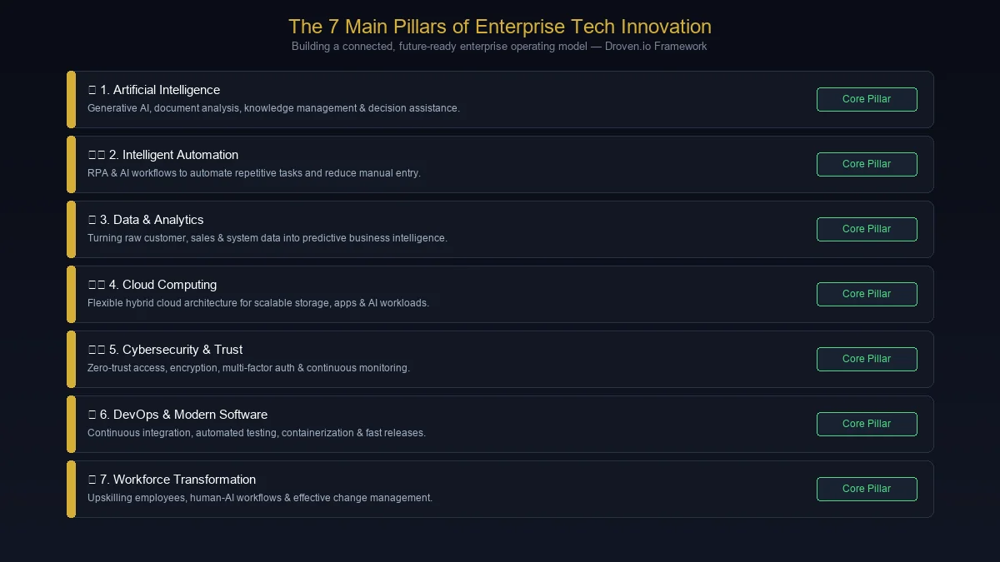
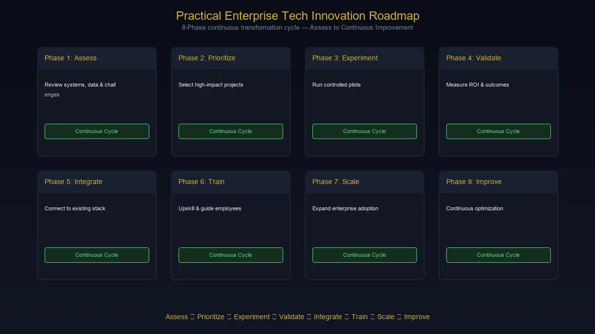

Technology is no longer something businesses can treat as a separate IT function. Artificial intelligence, cloud computing, automation, data analytics, cybersecurity, and digital collaboration are now directly connected to how companies operate, compete, and grow.
That is where the topic of droven.io enterprise tech innovation becomes relevant.
The phrase brings together two related ideas: Droven.io as a technology-focused content platform and enterprise tech innovation as the broader process of using modern technology to improve business operations.
Rather than looking at enterprise innovation as one software product, it is more useful to understand it as an ongoing approach to modernizing systems, improving workflows, using data more effectively, and preparing organizations for changes in the digital economy.
This guide explains what droven.io enterprise tech innovation means, the technologies involved, where businesses can apply them, how to measure results, and the mistakes companies should avoid.
What Is Droven.io Enterprise Tech Innovation?
Droven.io enterprise tech innovation refers to the broader technology and digital-transformation concepts associated with enterprise modernization, including artificial intelligence, automation, cloud computing, data analytics, cybersecurity, software development, and the future of work.
Droven.io is better understood as a technology content platform rather than assuming that the phrase represents one specific enterprise software product.
Its technology-oriented subject areas provide a useful framework for exploring how businesses are adopting emerging technologies and changing the way they operate.
For enterprise organizations, innovation is not simply about buying the newest tool.
It is about answering practical questions:
- What business problem are we trying to solve?
- Can technology make the process faster?
- Can automation reduce repetitive work?
- Can data improve decision-making?
- Can AI help employees work more effectively?
- Can modern infrastructure improve reliability?
- Can cybersecurity be built into the process from the beginning?
These questions are at the heart of enterprise technology innovation.
What Does Enterprise Tech Innovation Mean?
Enterprise tech innovation is the process of introducing and applying modern technologies to improve how an organization operates.
It can involve:
- Artificial intelligence
- Machine learning
- Generative AI
- Automation
- Robotic process automation
- Cloud computing
- Big data
- Business intelligence
- Cybersecurity
- DevOps
- Internet of Things
- Digital platforms
- Enterprise software
- Workflow optimization
The important part is not the technology itself.
The important part is the business outcome.
For example, implementing AI simply because competitors are using it is not necessarily innovation.
Using AI to reduce customer-service response times, automate repetitive document processing, improve forecasting, or help employees find information faster has a much clearer business purpose.
Why Enterprise Tech Innovation Matters
Businesses operate in an environment where customers expect faster service, employees expect better digital tools, and competitors can adopt new technologies quickly.
Older systems can create problems such as:
- Manual processes
- Duplicate data
- Slow reporting
- Difficult integrations
- Higher operating costs
- Security gaps
- Poor customer experiences
- Limited scalability
Enterprise technology innovation attempts to address these problems systematically.
A well-designed technology strategy can help an organization move from disconnected systems toward a more connected digital environment.
The goal is not to replace everything at once.
In many cases, the better approach is to identify the areas where technology can create the greatest measurable improvement and modernize those areas first.
The Main Pillars of Enterprise Tech Innovation
Enterprise innovation is easier to understand when it is divided into several connected pillars.

1. Artificial Intelligence
AI has become one of the most important areas of enterprise technology.
Businesses can use AI for:
- Customer support
- Document processing
- Data analysis
- Forecasting
- Search
- Content assistance
- Software development
- Fraud detection
- Workflow automation
- Knowledge management
Generative AI has expanded these possibilities by allowing employees to interact with technology through natural language.
However, successful enterprise AI requires more than connecting a chatbot to a business.
Companies need reliable data, appropriate governance, security controls, human oversight, and clearly defined use cases.
2. Intelligent Automation
Automation is valuable when a process is repetitive, predictable, and time-consuming.
Common examples include:
- Data entry
- Invoice processing
- Employee onboarding
- Report generation
- Email classification
- Document routing
- Appointment scheduling
- Routine customer requests
Robotic process automation, commonly called RPA, can automate structured tasks using software-based workflows.
AI can take this further by helping systems interpret information and make decisions within defined boundaries.
The combination of AI and automation can therefore create workflows that require less manual intervention.
3. Data and Analytics
Data is one of the foundations of enterprise innovation.
Companies generate information through:
- Customers
- Sales
- Websites
- Applications
- Employees
- Sensors
- Financial systems
- Marketing platforms
- Customer-support systems
The challenge is turning that information into something useful.
Business analytics can help organizations understand:
- What happened?
- Why did it happen?
- What is likely to happen next?
- What action should the company take?
This progression moves an organization from basic reporting toward data-driven decision-making.
Without reliable data, even sophisticated AI systems can produce poor results.
4. Cloud Computing
Cloud computing provides businesses with flexible access to computing infrastructure and software.
Organizations can use cloud environments for:
- Storage
- Applications
- Databases
- Backup
- Analytics
- AI workloads
- Software development
- Collaboration
Cloud infrastructure can also make it easier to scale technology as business requirements change.
However, moving everything to the cloud is not automatically the right strategy.
Companies need to consider:
- Security
- Compliance
- Cost
- Performance
- Data residency
- Existing infrastructure
- Integration requirements
For many enterprises, a hybrid environment that combines cloud and on-premises systems may be more practical.
5. Cybersecurity and Digital Trust
Technology innovation without cybersecurity creates unnecessary risk.
As organizations add cloud services, AI tools, connected devices, APIs, and remote-access systems, their digital attack surface can grow.
Enterprise security therefore needs to cover areas such as:
- Identity management
- Access controls
- Multi-factor authentication
- Encryption
- Network security
- Endpoint protection
- Data security
- Security monitoring
- Incident response
- Employee awareness
Security should not be added at the end of an innovation project.
It should be considered during planning and system design.
6. DevOps and Modern Software Development
Software development is another important part of enterprise technology modernization.
DevOps brings development and operations practices closer together to improve the speed and reliability of software delivery.
Modern software teams may use:
- Continuous integration
- Continuous deployment
- Automated testing
- Version control
- Infrastructure as code
- Monitoring
- Containerization
These practices can help businesses release software more efficiently while maintaining quality and reliability.
7. Workforce Transformation
Technology changes jobs as well as systems.
Automation may remove repetitive tasks, while AI can change how employees perform knowledge-based work.
This creates a need for:
- Employee training
- Upskilling
- Reskilling
- New job roles
- Better collaboration
- Change management
- Human-AI workflows
The strongest technology strategy is therefore not simply about technology.
It is about people, processes, and technology working together.
Droven.io Enterprise Tech Innovation and Digital Transformation
Digital transformation is broader than installing new software.
It involves changing how an organization creates value through technology.
A transformation project may affect:
Technology → Processes → Employees → Customers → Business outcomes
For example, a company might replace a manual customer-support workflow with an integrated system that combines CRM data, automation, analytics, and AI assistance.
The technology is only one part of the transformation.
Employees must learn the new process.
Customers must receive a better experience.
Management must be able to measure the result.
That is what separates meaningful transformation from technology experimentation.
Traditional IT vs. Enterprise Tech Innovation
| Area | Traditional Approach | Innovation-Focused Approach |
|---|---|---|
| AI | Small experiments | Integrated business workflows |
| Data | Separate reports | Connected analytics |
| Cloud | Infrastructure migration | Flexible technology architecture |
| Security | Reactive protection | Security by design |
| Automation | Basic repetitive tasks | Intelligent workflows |
| Employees | Static processes | Continuous upskilling |
| Software | Large release cycles | Continuous improvement |
| Decision-making | Historical reporting | Data-driven and predictive |
The shift is not about abandoning traditional IT.
Instead, it is about making technology more connected to business objectives.
How AI Is Changing Enterprise Operations
AI is becoming increasingly relevant to everyday enterprise work.
Consider a typical organization.
An employee may spend hours searching documents, responding to repetitive questions, preparing reports, or moving information between systems.
AI can potentially reduce some of this work.
For example:
Employee question → AI searches approved business information → Relevant answer → Employee verifies → Action taken
Similarly:
Business data → Analytics → AI-assisted analysis → Recommendation → Human decision
The human role remains important.
Enterprise AI should generally be designed around appropriate levels of human oversight, especially when decisions involve customers, finances, employment, security, or sensitive information.
Enterprise Tech Innovation Use Cases
The practical applications of enterprise technology vary by industry.
Retail
Retail companies can use technology for:
- Demand forecasting
- Inventory optimization
- Customer personalization
- Fraud detection
- Pricing analysis
- Supply-chain management
Manufacturing
Manufacturers can use connected technologies for:
- Predictive maintenance
- Quality monitoring
- Production optimization
- Equipment tracking
- Robotics
- Factory analytics
Healthcare
Healthcare organizations can use technology for:
- Scheduling
- Patient-flow management
- Administrative automation
- Data analysis
- Remote monitoring
- Digital communication
Sensitive healthcare information requires especially strong privacy, security, and compliance controls.
Financial Services
Financial organizations can apply technology to:
- Fraud detection
- Risk analysis
- Customer support
- Transaction monitoring
- Automated reporting
- Digital banking
Human Resources
HR departments can use technology for:
- Employee onboarding
- Workforce planning
- Skills analysis
- Internal support
- Scheduling
- Document management
AI use in hiring and employment decisions requires additional care because automated systems can introduce bias or unfair outcomes if they are poorly designed.
How to Choose the Right Enterprise Technology
One of the biggest mistakes businesses make is choosing technology before identifying the problem.
A better process begins with the business need.
Step 1: Identify the Problem
What is currently slow, expensive, repetitive, unreliable, or difficult?
Step 2: Measure the Existing Process
Establish the current cost, time, error rate, and performance.
Step 3: Define the Desired Outcome
Decide what improvement would make the project worthwhile.
Step 4: Evaluate Technology Options
Compare tools based on:
- Features
- Integration
- Security
- Scalability
- Cost
- Vendor support
- Ease of adoption
Step 5: Run a Controlled Pilot
Test the solution with a limited group before expanding it.
Step 6: Measure Results
Compare performance against the original baseline.
Step 7: Scale Carefully
Expand only after the technology demonstrates real value.
How to Measure Enterprise Tech Innovation
Technology projects need measurable objectives.
Useful KPIs can include:
| KPI | What It Measures |
|---|---|
| Process cycle time | How quickly work is completed |
| Cost per transaction | Operational efficiency |
| Error rate | Process quality |
| Employee productivity | Output relative to effort |
| Customer response time | Service performance |
| System uptime | Technology reliability |
| Security incidents | Digital risk |
| Customer satisfaction | Experience quality |
| Revenue impact | Financial value |
| ROI | Overall investment return |
The best projects usually connect technical metrics with business metrics.
For example, reducing server costs is useful.
But if the same project also improves customer response time and increases conversions, its business value becomes much clearer.
Enterprise Tech Innovation and ROI
Return on investment is one of the most important questions executives ask.
A technology project can create value through:
- Lower costs
- Increased revenue
- Reduced errors
- Faster operations
- Better customer retention
- Lower risk
- Improved employee productivity
A simple ROI framework is:
ROI = (Financial benefit − Investment cost) ÷ Investment cost
However, not every benefit is immediately financial.
Improved security, employee satisfaction, customer experience, and operational resilience may create long-term value that is harder to measure.
That is why enterprise technology evaluation should consider both immediate and strategic benefits.
The Role of Data Governance
As companies use more AI and analytics, data governance becomes increasingly important.
Good data governance helps organizations define:
- Who owns the data
- Who can access it
- How data is stored
- How data is protected
- How long it is retained
- How data quality is maintained
- How sensitive information is handled
Poor data governance can undermine otherwise sophisticated technology projects.
If business data is incomplete, duplicated, outdated, or inaccessible, analytics and AI systems will struggle to deliver reliable results.
The Role of Human Oversight
Enterprise automation should not mean removing people from every decision.
Some processes are suitable for full automation.
Others require human review.
A useful model is:
Automation handles routine work → AI assists with analysis → Human reviews important decisions
This approach can improve efficiency without creating unnecessary risks.
Human oversight becomes especially important when technology affects:
- Employment
- Healthcare
- Financial decisions
- Customer eligibility
- Security
- Legal matters
- Sensitive personal information
Enterprise Innovation and Legacy Systems
Many large organizations still rely on older technology.
Legacy systems can create challenges such as:
- Limited integration
- Outdated interfaces
- High maintenance costs
- Data silos
- Security concerns
- Difficult upgrades
Replacing everything immediately is rarely practical.
Instead, businesses can modernize progressively.
Possible strategies include:
- API integration
- Data migration
- Cloud modernization
- Application modernization
- System replacement
- Middleware
- Incremental upgrades
The right approach depends on the organization's risk tolerance, budget, technical architecture, and business requirements.
Why Change Management Matters
A technically successful project can still fail if employees do not adopt it.
Change management helps employees understand:
- Why the technology is being introduced
- How their work will change
- What they need to learn
- Where they can get help
- What benefits the change creates
Good implementation therefore includes:
- Training
- Communication
- Documentation
- Feedback
- Support
- Leadership involvement
Technology adoption is ultimately a human process.
Common Enterprise Tech Innovation Mistakes
1. Chasing Every New Technology
Not every trend deserves investment.
A technology should solve a real business problem.
2. Starting With the Tool Instead of the Problem
Buying software before defining the desired outcome can create unnecessary complexity.
3. Ignoring Existing Systems
New technology must often integrate with legacy applications and databases.
4. Underestimating Security
Security should be part of architecture and planning.
5. Ignoring Employees
People need training and support when workflows change.
6. Measuring Activity Instead of Outcomes
The number of AI experiments or automated workflows is less important than the results they produce.
7. Scaling Too Quickly
A successful pilot does not automatically mean the technology is ready for the entire organization.
8. Failing to Define Ownership
Every major technology project should have clear responsibility for implementation, governance, security, and performance.
A Practical Enterprise Innovation Roadmap
Businesses that are beginning their technology transformation can use a simple roadmap.

Phase 1: Assess
Review current systems, workflows, data, security, and business challenges.
Phase 2: Prioritize
Identify projects based on potential impact, feasibility, cost, and risk.
Phase 3: Experiment
Run a controlled pilot with clearly defined success criteria.
Phase 4: Validate
Measure technical performance and business outcomes.
Phase 5: Integrate
Connect the solution with existing systems and workflows.
Phase 6: Train
Prepare employees and establish support processes.
Phase 7: Scale
Expand the solution after demonstrating measurable value.
Phase 8: Improve
Continue monitoring performance and refining the system.
This creates a cycle of:
Assess → Experiment → Measure → Scale → Improve
Enterprise innovation should be continuous rather than a one-time project.
What Makes Enterprise Technology Future-Ready?
A future-ready technology environment should ideally be:
Scalable
It should be capable of supporting business growth.
Secure
Security should be integrated into the architecture.
Flexible
Systems should be able to adapt as business requirements change.
Data-Driven
Decision-making should be supported by reliable information.
Interoperable
Different systems should be able to communicate effectively.
Human-Centered
Technology should improve the employee and customer experience.
Measurable
Organizations should be able to determine whether investments are producing value.
These characteristics are more important than simply having the newest technology.
Droven.io Enterprise Tech Innovation and the Future of Work
The future of enterprise technology will increasingly involve collaboration between people and intelligent systems.
Employees may use AI as:
- A research assistant
- A writing assistant
- A coding assistant
- A data-analysis tool
- A customer-support assistant
- A workflow automation layer
This does not necessarily mean that technology replaces entire jobs.
In many cases, the larger change is that individual tasks within a job become automated or augmented.
That means companies will need to rethink job design and skills.
Future-ready organizations may place greater emphasis on:
- AI literacy
- Critical thinking
- Data literacy
- Digital collaboration
- Problem-solving
- Adaptability
- Communication
Why Enterprise Innovation Is More Than AI
AI receives enormous attention, but enterprise technology innovation is much broader.
A successful digital organization may need:
AI + Data + Cloud + Security + Software + Automation + People + Governance
Removing any major component can weaken the overall strategy.
For example, an organization can have an excellent AI model but poor data.
Or it can have good data but inadequate cybersecurity.
Or it can have advanced technology but employees who do not know how to use it.
Enterprise innovation works best when these components are designed as parts of one operating model.
Frequently Asked Questions About Droven.io Enterprise Tech Innovation
What is droven.io enterprise tech innovation?
Droven.io enterprise tech innovation is best understood as a technology-focused framework around enterprise modernization, including AI, automation, cloud computing, data analytics, cybersecurity, software development, and digital transformation.
Is Droven.io an enterprise software product?
The term should not automatically be interpreted as one specific enterprise SaaS product. Droven.io is better understood in this context as a technology content platform and source of information around modern enterprise technology.
What technologies are associated with enterprise tech innovation?
Major technologies include artificial intelligence, machine learning, automation, cloud computing, big data, analytics, cybersecurity, DevOps, enterprise software, and connected digital systems.
How can enterprise technology improve business performance?
Technology can help reduce repetitive work, improve decision-making, increase operational efficiency, enhance customer experiences, reduce errors, and create new digital capabilities.
Is enterprise tech innovation only for large companies?
No. Smaller businesses can also use enterprise technology principles. The difference is usually the scale and complexity of the implementation.
How should a company begin its technology transformation?
Start with a business problem rather than a technology product. Identify the current process, establish measurable goals, select an appropriate solution, run a pilot, measure results, and scale gradually.
Why is cybersecurity important for enterprise innovation?
Modern digital systems create new security and privacy risks. Integrating security from the beginning can reduce vulnerabilities and help protect business systems and sensitive information.
What role does AI play in enterprise innovation?
AI can assist with analysis, automation, customer service, software development, forecasting, knowledge management, and many other workflows. Its value depends on appropriate use cases, reliable data, governance, and measurable outcomes.
What is the role of cloud computing?
Cloud computing can provide scalable infrastructure, storage, applications, and computing resources. It can also support AI, analytics, collaboration, and modern software development.
How do companies measure technology innovation?
Common measures include process time, cost reduction, productivity, error rates, system reliability, customer satisfaction, revenue impact, risk reduction, and return on investment.
Why do enterprise technology projects fail?
Common reasons include unclear objectives, poor data, weak integration, inadequate security, lack of employee adoption, unrealistic expectations, insufficient governance, and failure to measure business outcomes.
Does enterprise innovation require replacing legacy systems?
Not necessarily. Companies can often modernize gradually through integration, APIs, cloud migration, application modernization, or incremental replacement.
What is the biggest mistake businesses make with AI?
One of the biggest mistakes is adopting AI simply because it is popular without identifying a specific business problem and defining how success will be measured.
Final Thoughts
Droven.io enterprise tech innovation is best understood as a broader approach to enterprise technology and digital transformation rather than a single piece of software.
The concept brings together some of the most important areas of modern business technology, including artificial intelligence, automation, cloud computing, data analytics, cybersecurity, software development, DevOps, and workforce transformation.
The biggest lesson is simple: technology alone does not create innovation.
A company can purchase sophisticated software and still fail to improve its business.
Real innovation happens when technology is connected to a genuine problem, integrated into existing workflows, adopted by employees, protected through appropriate security controls, and measured against meaningful business outcomes.
A practical enterprise strategy therefore looks like:
Identify the problem → choose the right technology → test it → measure the outcome → train people → integrate systems → scale carefully → continue improving.
That approach is more sustainable than chasing every new technology trend.
As AI and automation continue to reshape the workplace, businesses will increasingly need to combine intelligent software with reliable data, secure infrastructure, skilled employees, and strong governance.
For organizations exploring droven.io enterprise tech innovation, the most useful takeaway is not to ask which technology is newest.
Ask instead:
Which technology can solve an important business problem, produce measurable value, and remain useful as the organization grows?
That question creates the foundation for technology innovation that is practical, scalable, and built for long-term business success.
For more such useful information read our site ateliergolddruck.com